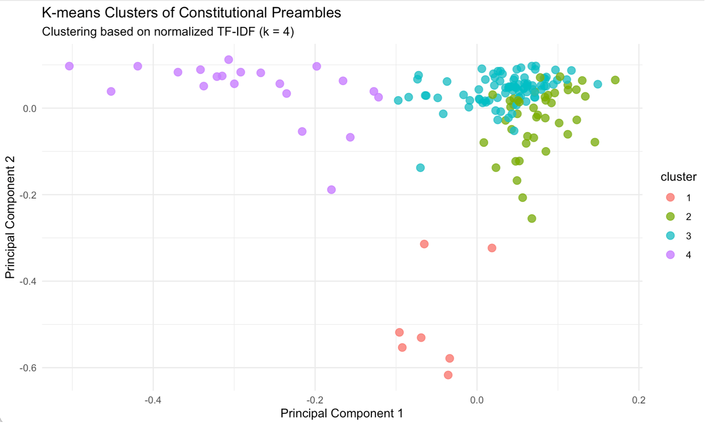
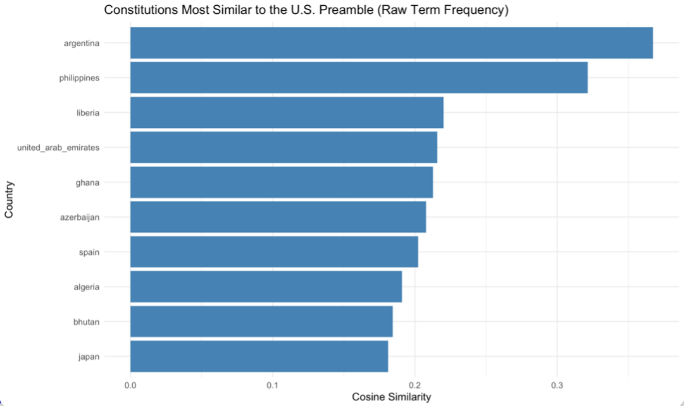
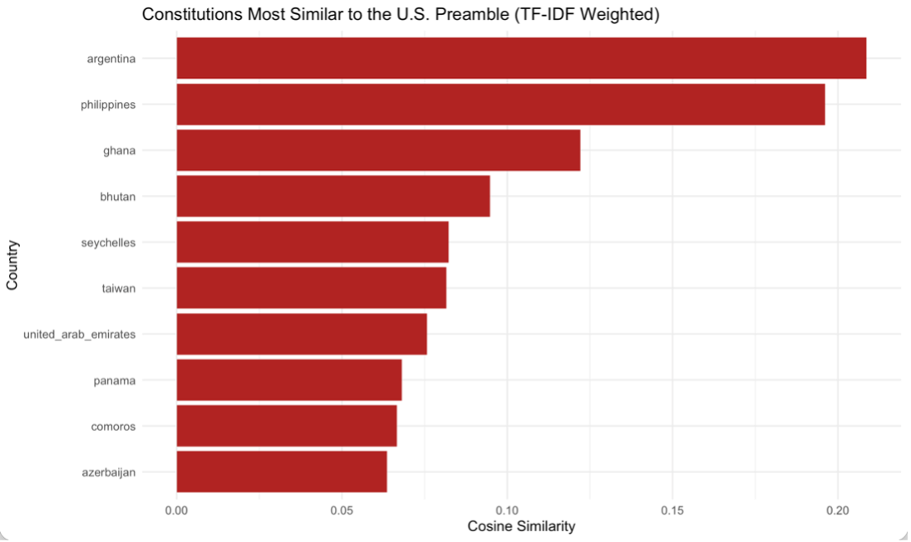

Constitutional Echoes
Comparing Global Preambles with the United States
Constitutional preambles express political membership, shared histories, and the purposes of government. This project compares 155 preambles to ask which texts resemble the United States, how that answer changes with the measurement of language, and whether resemblance follows a clear historical trend.
What counts as a constitutional echo?
Constitutional preambles share a language of rights, sovereignty, religion, and national unity. This project asks which preambles most resemble the United States, whether the answer changes when common words receive less weight, and whether similarity follows a historical trajectory. Shared vocabulary provides evidence of resemblance; documentary history is needed to establish influence.
Preambles state collective purposes and political identities as well as introducing legal institutions. Their resemblance can arise through conventional declarations of sovereignty or more distinctive formulations of rights and national purpose. Comparing several representations helps separate vocabulary that is common to this genre from wording that makes a particular pair of texts stand out.
The comparative question follows the text-analysis approach in Imai (2017): constitutional influence becomes empirically approachable by first examining resemblance among preambles. These opening statements provide a common focus on guiding purposes and principles, while their language also expresses national histories, religious commitments, and collective identities. Similarity can therefore identify texts worth comparing closely before historical evidence is used to explain why they resemble one another.
A comparative corpus of constitutional preambles
The constitutional preamble corpus distributed with Kosuke Imai’s Quantitative Social Science collects preamble text with a country identifier and constitutional year. It provides a common set of English texts for comparing the language used to introduce national constitutions. Each document is one country’s preamble, rather than a sequence of every historical revision.
The analysis covers 155 preambles. Lowercasing and removal of punctuation, numbers, symbols, URLs, and English stopwords produce 4,716 features; word forms are retained without stemming. Raw term frequencies emphasize words used often. TF–IDF downweights words widespread across the corpus. Cosine similarity compares the direction of these vectors, reducing the direct influence of document length.
The U.S. text illustrates the distinction. Raw counts emphasize repeated terms such as “united,” “states,” and “establish”; TF–IDF gives more prominence to distinctive words including “tranquility,” “ordain,” and “posterity.” Rarity here means rarity within this corpus, not greater constitutional importance. Retaining unstemmed word forms preserves distinctions in the legal vocabulary, while also treating related forms as separate features.
The computational representation makes the meaning of “similar” explicit (Imai, 2017). Frequent shared terms locate broad constitutional vocabulary; weighting by corpus rarity asks a narrower question about distinctive overlap. This project uses both views because a common declaration of sovereignty and a shared unusual formulation need not carry the same historical implication. Neither representation observes a transmission path between drafters.
Four patterns of constitutional language
K-means clustering uses unit-normalized TF–IDF vectors, four clusters, and 50 random starts. The clusters contain 7, 42, 85, and 21 texts. Characteristic vocabulary suggests Caribbean and Commonwealth traditions, religious and legal formulations, statehood and citizenship, and rights or international-charter references. These are interpretive labels for overlapping textual traditions.

View full-size figure
{kind=link}
The small Caribbean cluster is especially recognizable as a regional grouping. Other clusters are broader: religious invocations and formal legal wording can appear together, while citizenship and statehood language spans many countries. The PCA view helps locate these groupings, but the clustering itself uses the full textual representation. Apparent closeness on two axes is therefore an incomplete account of why texts belong together.
The closest matches depend on the weighting
Argentina and the Philippines are the closest matches under both representations. Raw frequencies also place Liberia and the United Arab Emirates near the top, while TF–IDF brings Bhutan and Seychelles into the top five. Common constitutional language and more distinctive vocabulary therefore produce different neighborhoods around the U.S. text.

View full-size figure
{kind=link}

View full-size figure
{kind=link}
Liberia moves from third under raw frequencies to twelfth under TF–IDF, while Bhutan moves from ninth to fourth. These changes concern the same texts; they result from changing the weight attached to shared terms. Argentina and the Philippines remain leading comparisons even after this adjustment, making their resemblance less dependent on only the most widespread constitutional vocabulary.
A peak around 1990
Both representations reach their highest decade average in the bin ending in 1990. Raw-frequency similarity subsequently falls; TF–IDF rebounds slightly in the last bin. Linear and quadratic regressions on the six averages do not establish a statistically clear secular trend.

View full-size figure
The bins compare different preambles grouped by their constitutional dates. They do not trace the same countries through time, and their unequal sizes make the earliest averages particularly sensitive to individual documents.
The common peak under both representations suggests that the bin ending in 1990 is distinctive in this collection, even though the later paths diverge. It does not identify a historical turning point in American influence. With only six aggregate observations, the fitted trend tests also have little information about shorter episodes or differences among countries within a decade.
Resemblance as a starting point for historical inquiry
The stable first two neighbors offer a focused starting point for close reading, while the shifting wider ranking shows how measurement shapes interpretation. Similar wording may reflect borrowing, a common source, translation, or conventional legal language.
English rendering, edition choices, and incomplete historical coverage limit what the corpus can establish. Text analysis can identify promising comparisons; it cannot replace evidence about how constitutional language traveled.
The analysis thus offers three levels of comparison: broad families of constitutional language, particular neighbors of the U.S. preamble, and differences across dated groups of documents. Agreement across these views can guide the selection of texts for historical investigation. Disagreement is equally informative because it reveals which conclusions depend on weighting, projection, or the composition of the corpus.
References
Imai, K. (2017). Quantitative social science: An introduction. Princeton University Press.